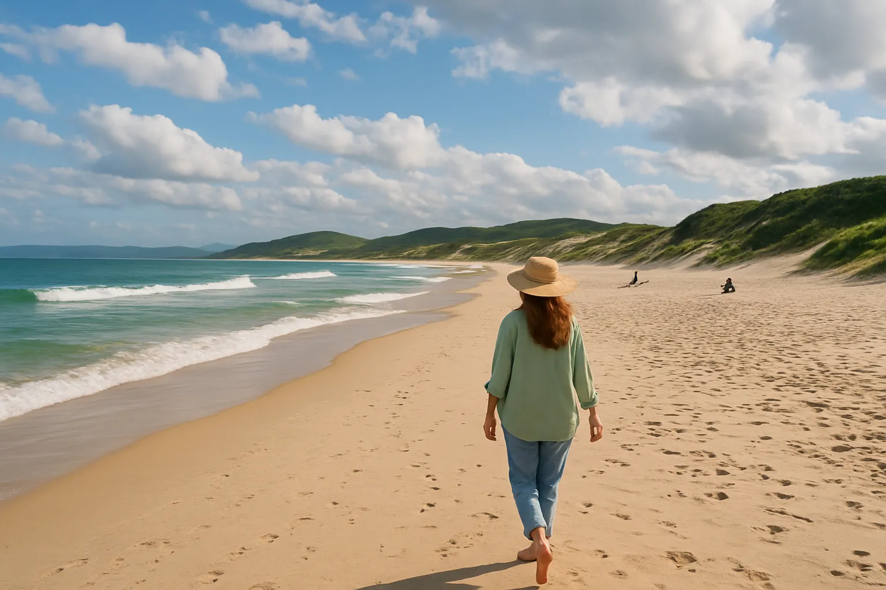
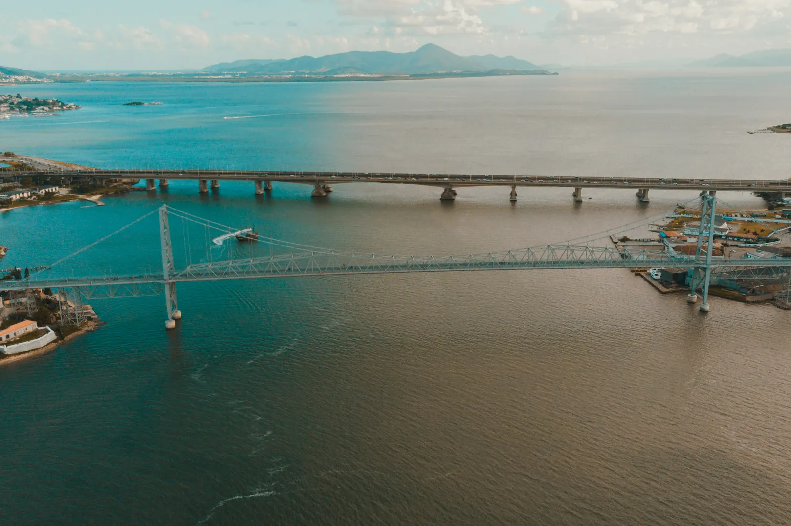
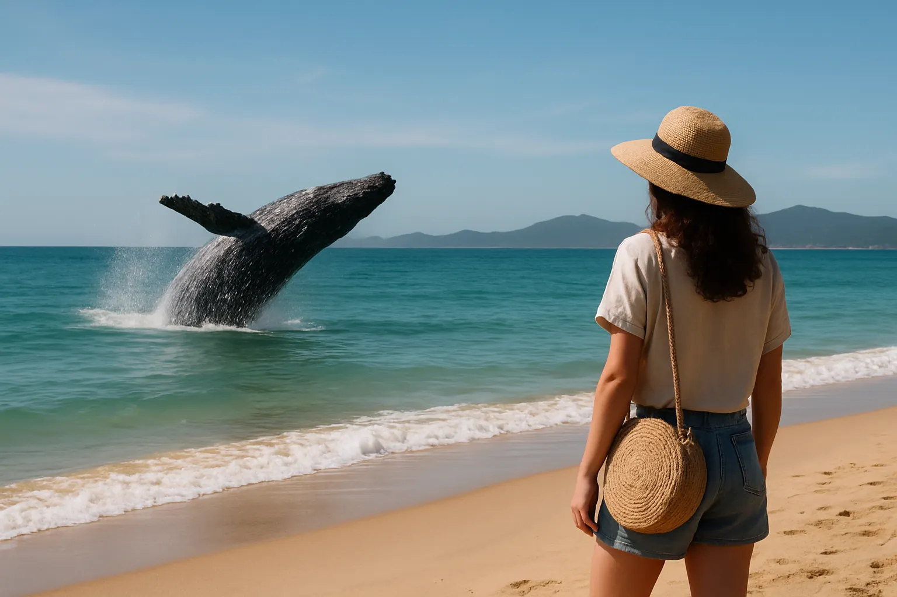
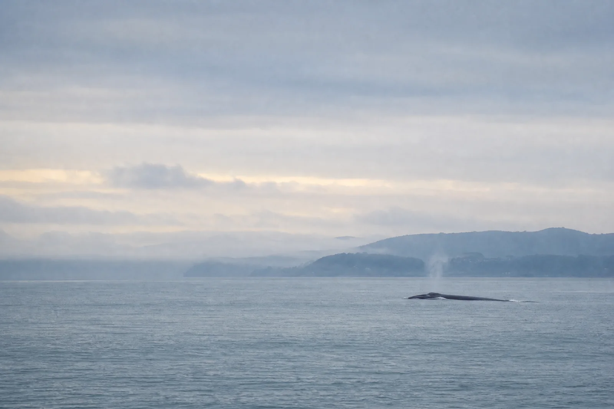
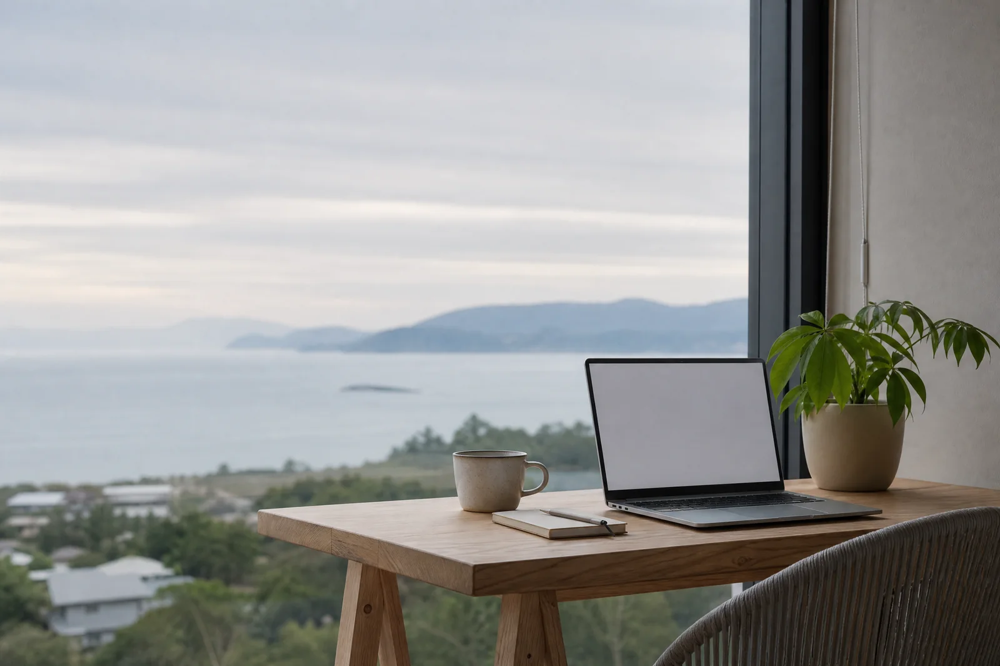
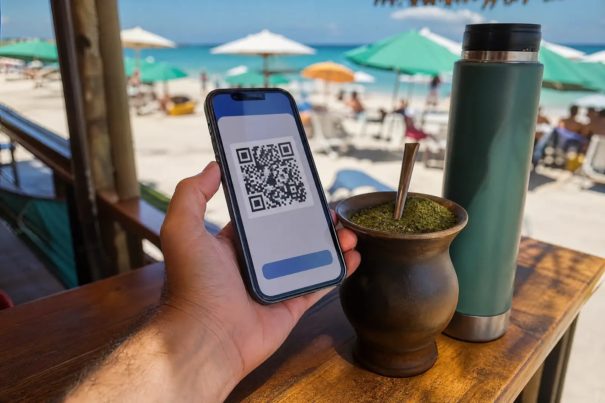
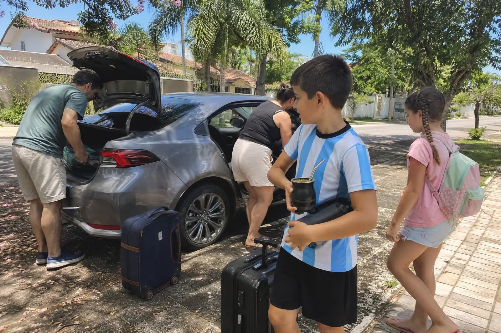
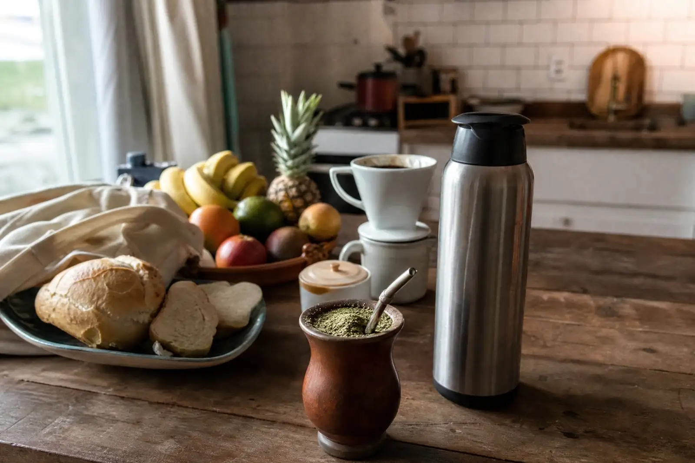
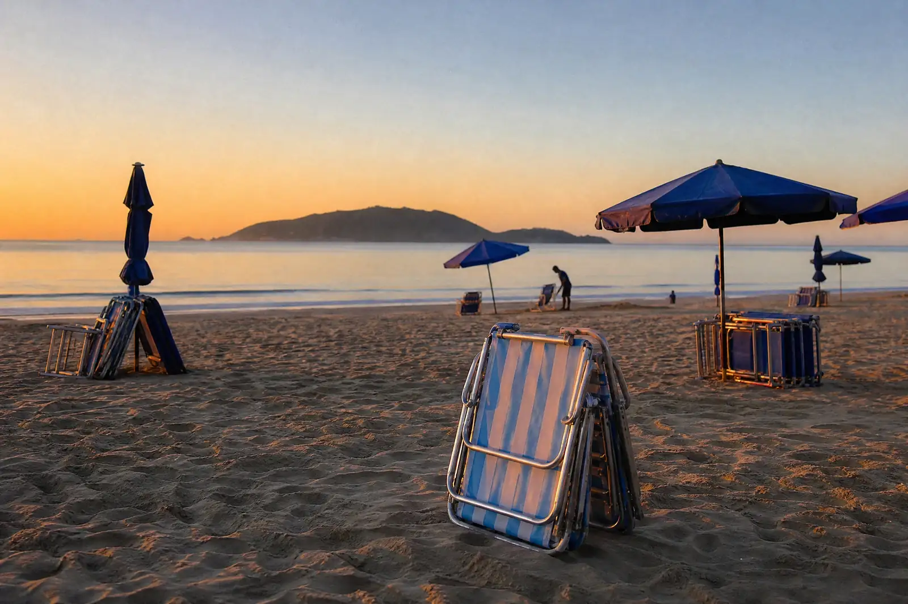
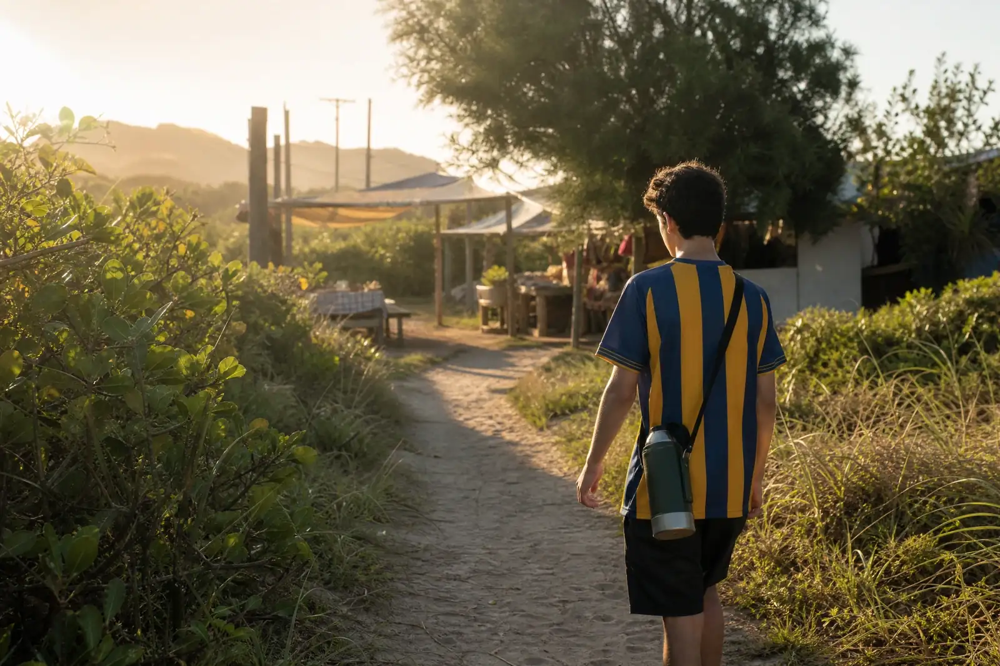

Blog Campeche Lofts
Florianópolis para viver com mais contexto.
Guias práticos sobre o Campeche, o sul da ilha, natureza, cultura e formas mais tranquilas de planejar uma temporada em Florianópolis.
Leituras recentes
Boas informações para uma viagem bem pensada.
Cada artigo parte de uma dúvida real e privilegia fontes atualizadas. Quando o assunto muda com o tempo, a data de revisão e os links de referência ficam visíveis no próprio texto.
Comece por aqui

Ilha do Campeche: como visitar, regras de acesso e o que saber antes da travessia
Autorização, barcos, trilhas guiadas e regras: o guia para visitar a ilha em frente à Praia do Campeche.

Primavera em Florianópolis: a temporada ideal para conhecer o Campeche sem multidão
Descubra por que a primavera é o momento certo para visitar o Campeche em Florianópolis: clima ameno, trilhas, praias do leste e menos movimento.

Qué documentos necesitás para viajar a Florianópolis desde Argentina
DNI, menores, auto y salud: la lista para revisar antes de salir hacia Brasil.
Todos os artigos
Nenhum artigo neste tema ainda.
Ilha do Campeche: como visitar, regras de acesso e o que saber antes da travessia
Autorização, barcos, trilhas guiadas e regras: o guia para visitar a ilha em frente à Praia do Campeche.
Qué documentos necesitás para viajar a Florianópolis desde Argentina
DNI, menores, auto y salud: la lista para revisar antes de salir hacia Brasil.

Baleias-francas em Floripa: onde e como avistar da areia (setembro/outubro 2026)
Guia prático para ver baleias-francas em Florianópolis de pontos em terra, com dicas de segurança, melhores horários e logística no sul da ilha.
Primavera em Florianópolis: a temporada ideal para conhecer o Campeche sem multidão
Descubra por que a primavera é o momento certo para visitar o Campeche em Florianópolis: clima ameno, trilhas, praias do leste e menos movimento.

Temporada de baleias-franca no litoral de Santa Catarina: como acompanhar com respeito
Entenda o período indicado para a espécie, onde acompanhar informações atualizadas e por que observar com responsabilidade importa.

Trabalho remoto em Florianópolis: como planejar uma temporada com mais leveza
Um roteiro prático para organizar espaço, rotina, deslocamentos e o que vale confirmar antes de escolher uma hospedagem temporária.

Cómo pagar en Brasil sin sorpresas: Pix, tarjetas y consejos para viajeros argentinos
Pix, tarjeta o efectivo: una guía práctica para llegar sabiendo cómo vas a pagar cada cosa.

Cómo llegar a la Playa de Campeche desde el aeropuerto o la terminal de ómnibus
Tiempos, costos y opciones para cada forma de viajar hasta el Campeche.

Cocina propia en las vacaciones: cómo comer bien y gastar menos en Campeche
Mercados, panaderías y una cocina equipada: cómo cambia el presupuesto del viaje.

Calendario de verano 2026/2027 en Florianópolis: réveillon, enero y carnaval
Las fechas confirmadas de la temporada para planear tu viaje con tiempo.

Qué hacer en la Playa de Campeche además de la playa
Dunas con vista, feria orgánica y una escapada a la Lagoa da Conceição.